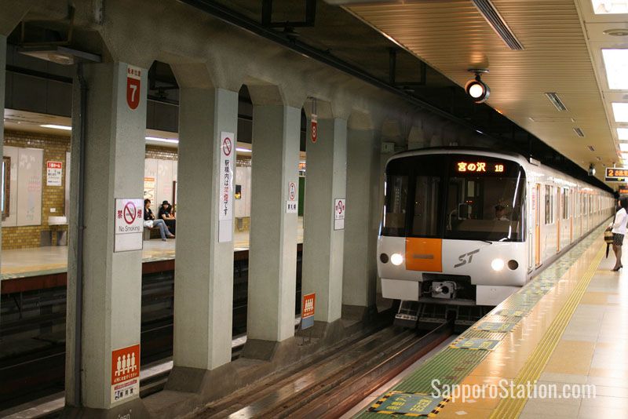

Etude de cas - Chikatetsu
Nous allons étudier un système de transport souterrain, également appelé métropolitain (ou métro pour faire court) dans sa déclinaison Japonaise. Dans cette étude, nous n'étudierons pas la partie ferroviaire, mais nous nous focaliserons plutôt sur l'aspect billétique des titres de transport. De ce fait, nous allons construire un système de gestion des déplacements des utilisateurs du métro, conditionné par le paiement de ces déplacements.
Description du système considéré
Classiquement, les usagers pénètrent dans la station de métro en franchissant une barrière d'entrée à l'aide d'un titre de transport valide. Ils se rendent à leur destination en montant dans une rame qui parcourt les arrêts d'une ligne. Ils peuvent éventuellement emprunter des correspondances dans certaines stations pour passer d'une ligne à l'autre. Finalement, une fois à destination, ils ressortent du métro en franchissant une barrière de sortie.

Les tickets de transport sont généralement achetés auprès d'une machine (un automate), qui permet indifféremment d'acheter des tickets à l'unité ou de recharger des cartes de transport prépayées (non considérées dans notre étude).
Le tarif du voyage dépend de la distance parcourue entre la station d'entrée et la station de sortie, comptabilisée en kilomètres sur le tracé des lignes composant le réseau de métro. Ainsi, avant de pouvoir passer la barrière d'entrée, le voyageur achète un ticket initialisé avec une certaine provision d'argent (lui permettant d'aller plus ou moins loin). Au moment du passage à la barrière de sortie, si la provision est suffisante, l'usager peut sortir.
Pour éviter que le voyageur ne puisse pas sortir d'une station parce qu'il n'a pas provisionné assez d'argent sur son ticket, il a la possibilité d'ajuster le montant contenu sur celui-ci dans une machine dédiée (Fare Adjustment). On notera qu'il ne viendrait tout simplement pas à l'idée des usagers de sauter au dessus de la barrière pour resquiller, comme on le ferait dans des pays moins civilisés.
Le réseau de métro comporte potentiellement plusieurs lignes qui peuvent se croiser à certaines stations pour permettre aux usagers de prendre une correspondance. La figure ci-dessous montre le maillage du réseau de transport souterrain de Sapporo sur l'île de Hokkaido au Japon. On y trouve 3 lignes, nommées Tozai, Namboku et Toho, qui relient les 46 stations. Les stations centrales du réseau (Sapporo et Odori) sont les hôtes de plusieurs lignes et permettent ainsi de passer d'une ligne à une autre.
Le tableau de coût des trajets (basé sur les kilomètres théoriquement parcourus en prenant le chemin le plus court entre les stations) est donné ici et extrait ci-dessous. Les prix sont exprimés en yens (pour briller en société : 100 yen = 0.85 euros). On remarque que la tarification est découpée en zones correspondant aux distances depuis la station d'entrée (zone 1 = moins de 3km, zones 2 = entre 3km et 7km, etc.)